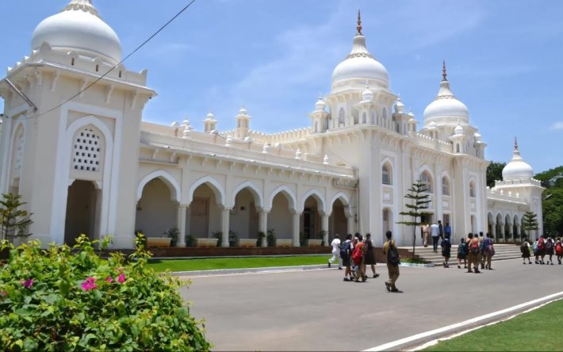
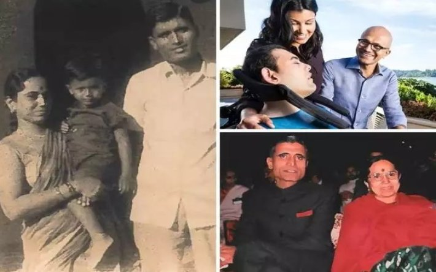
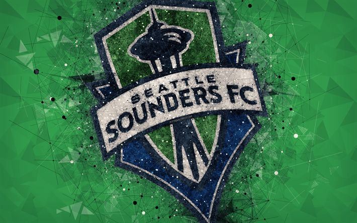

Born on August 19, 1967, in Hyderabad, Nadella attended the Hyderabad Public School, Begumpet. Nadella failed in his attempt to clear the Indian Institute of Technology (IIT) exam. He did, however, get into the Birla Institute of Technology (BITS) in Mesra and the Manipal Institute of Technology. He chose Manipal over BITS and received a bachelor's in electrical engineering in 1988. He later studied MS in computer science at the University of Wisconsin–Milwaukee. Nadella has done MBA from the University of Chicago Booth School of Business. He is married to Anupama, the daughter of Nadella’s father’s Indian Administrative Service batchmate. They have three children. He lives in Bellevue, Washington. Nadella and his wife are part owners of Seattle Sounders FC, a Major League Soccer club. He is an avid reader of American and Indian poetry and is passionate about cricket.
  